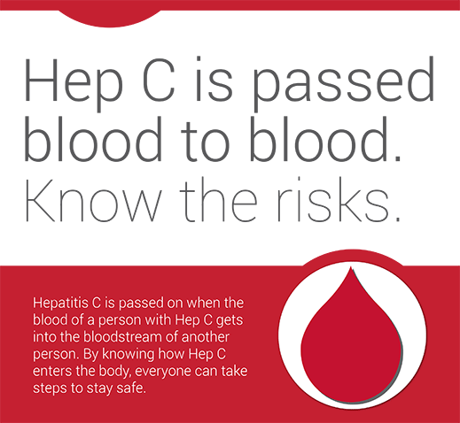

Hep C often enters the body by:
-
sharing drug equipment, including needles, syringes, filters, water and cookers for injecting drugs; and pipes or straws for snorting drugs
-
sharing improperly sterilized tools for tattooing, body piercing, acupuncture and electrolysis; sharing tattoo ink and ink pots can also pass on Hep C
Hep C can also enter the body:
-
through medical procedures, including vaccinations and surgeries, that re-use equipment that was not sterilized
-
through blood transfusions or organ transplants if they were not screened for Hep C (Canada started screening donated blood and organs for Hep C in 1990; in some other countries, blood wasn’t screened for Hep C until more recently)
-
by sharing personal items that might have blood on them, such as razors, nail clippers and toothbrushes
-
during rough sex among men who also have HIV
-
from parent to child during pregnancy or childbirth
Most people do not have symptoms for many years. The only way to know if you have Hep C is to get tested. If you have Hep C, treatment is available.